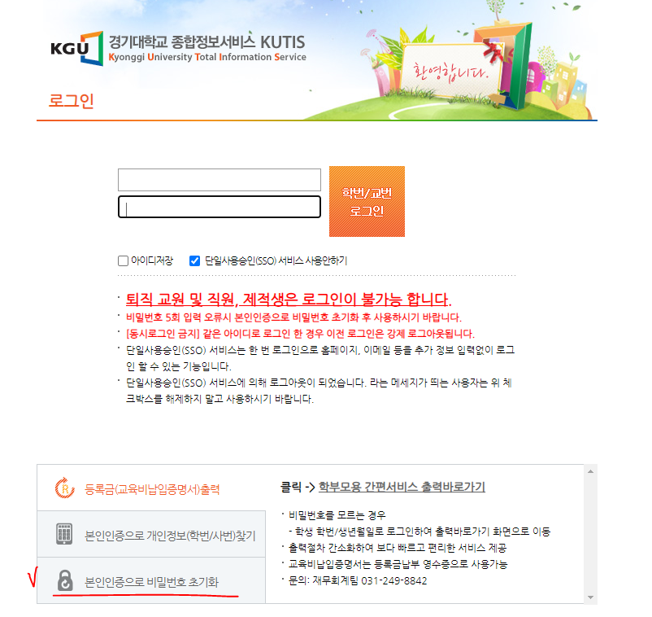

🙏 서명하러가기 (아래 두 링크 중 원하는 링크를 선택하세요)
맨 아래 서명부분으로 바로가기 ( 페이지가 완전히 뜰 때까지 스크롤하지 마세요)
📢 서명 마감일: 06월 24일 23시 59분 (D)
※ 더 추가할 내용이 있다면 알려주세요
Q0. 서명을 왜 해야 하나요?
Q1. 휴학생, 졸업생도 서명할 수 있나요?
A1. 에브리타임에 올라온 내용을 보면 가능한 것으로 보입니다.
Q2. [의견등록] 버튼이 클릭이 안돼요
A2. 로그인이 되어있지 않아서 그렇습니다. 로그인을 먼저 해주세요.
Q3. 계정이 비활성화 돼서 로그인이 안돼요
A3. KUTIS에 들어가서 로그인 화면에서 아래 [본인인증으로 비밀번호 초기화]버튼을 눌러서 휴대폰 인증하고, 비밀번호를 초기화 해보세요. 몇분 내에 정상 로그인 됩니다.
Q4. 모바일로는 서명을 할 수 없나요?
A4. 모바일로도 가능합니다. 로그인이 되어있는지 확인해보세요.
관련된 모든 소스코드는 아래에 업로드해두었습니다.
https://github.com/g0pher98/kgu_sign_2021
- 업데이트 주기 5분 간격으로 변경
- 서명 수 변화 추이 추가
- 휴학생, 졸업생 QnA 추가
- 서명 마감일 추가
- 서명 비율 차트 추가
- 서명 너무 많아서 맨 아래로 바로 가는 링크 생성
- 서명 마감일 D-Day 추가
- 서명을 해야하는 이유 추가
- 모바일에서 글씨 더 크게 보이도록 수정
- 간단하게 서명할 수 있는 기능 추가
- 간편 서명 요청 시, 서명이 요청됨을 알 수 있도록 수정
- 서명을 해야하는 이유 추가
- 중복 서명은 카운팅에서 제외. 동명이인은 방법이 없음.